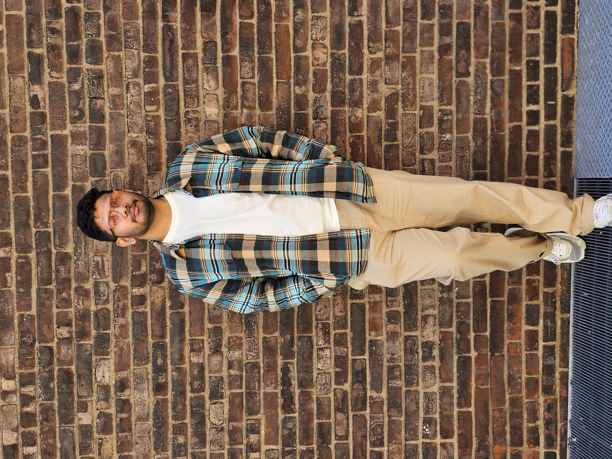

Darshan
Munkur
Senior UX Designer. Enterprise products. Measurable outcomes.

I began my career not as a designer, but as a content programmer — building algorithmic eLearning experiences to WCAG standards using HTML, CSS, and Python. That engineering foundation taught me to think in systems before I ever opened Figma.
Craving a deeper understanding of why people interact with interfaces the way they do, I pivoted into Human-Computer Interaction at IUPUI — where I ran usability studies, shipped a pet health app concept, and taught Python to 30+ graduate students while finishing my MS.
That pivot led me to Incedo Inc., where I've spent the last four years embedded inside Fortune 500 product teams across Banking, Wealth Management, and Telecom. I've designed platforms used by thousands of bankers, advisors, and treasury teams globally — and learned that the best UX decisions happen at the intersection of user evidence and business constraint.
My background in engineering means I think in systems — how components connect, where edge cases live, and how design survives handoff. I don't just ship screens; I ship the rationale behind them.
Work History
Lead designer on the CardLink platform — redesigning end-to-end banker and customer workflows for credit card acquisition across 6 business units. Shipped a unified white-labeled design system in Figma, collaborated daily with PMs and engineering leads, and presented design rationale to C-suite stakeholders. +20% application uplift · −30% funnel drop-off.
Redesigned Verizon Kirke — the internal System of Record for wireless, wireline, and fiber change management. Led 19 interviews and 150+ surveys, ran a Design Thinking workshop with core stakeholders, and shipped a top-to-bottom redesign in lockstep with agile engineering. +40% CSAT.
Redesigned LPL's Advisor Onboarding Portal — consolidating 1,000+ hours and 2,478 manual actions into a unified 0→1 self-service experience. Worked closely with product managers and engineers to close an 8–24pt NPS gap against competitors and address a 48% advisor dissatisfaction rate.
Contributed to Citi's Digital Signer Management platform — a centralized experience for global treasury teams across 44 markets and 80% of transaction volume. Co-led persona creation and journey mapping across 20 enterprise clients alongside senior researchers and executive stakeholders. GTB Innovation Award 2025.
Led concept development for a pet health app targeting 60M+ pet-owning households. Synthesized 9+ interviews and 110+ survey responses into personas and high-fidelity prototypes, running rapid usability iterations.
Designed algorithmic K–12 eLearning content to WCAG AA standards using HTML, CSS, JavaScript, and Python. Led a 5-member team building in-house productivity tools, improving output by 20%.
- Architecture & multi-BU white-labeling
- Component libraries & Figma tokens
- Design-to-dev handoff
- Pattern documentation
- End-to-end flows & IA
- Micro-interactions & edge states
- Wireframing & prototyping
- WCAG 2.2 AA accessibility
- Moderated interviews & usability testing
- Contextual inquiry & surveys
- Journey mapping & service blueprints
- Affinity diagramming & synthesis
- Stakeholder alignment & exec presentation
- Roadmapping & prioritization
- Design thinking facilitation
- Agile / Scrum collaboration
- Figma (AI), Figma Make
- Maze, Miro, Jira, Confluence
- Illustrator, Webflow
- HTML / CSS, Cursor
- AI-augmented design workflows
- Prompt design & LLM tooling
- Anthropic AI Fundamentals (in progress)
When I'm not designing, I'm usually exploring NYC's best cafes and photo spots or getting lost in a book. You might also find me building Lego and Gundam sets or diving into a game on my PC, PS5, or Switch. I'm a constant explorer of movies, music, and local restaurants — always on the hunt for a great story or a new dessert. Whether I'm behind a camera or a controller, I thrive on discovering new hobbies and hidden gems in the city.
FDIC Innovation Tech Sprint 2021 Finalist — "Breaking Down Barriers: Reaching the Last Mile of the Unbanked" — designed solutions to improve financial inclusion for underserved communities.